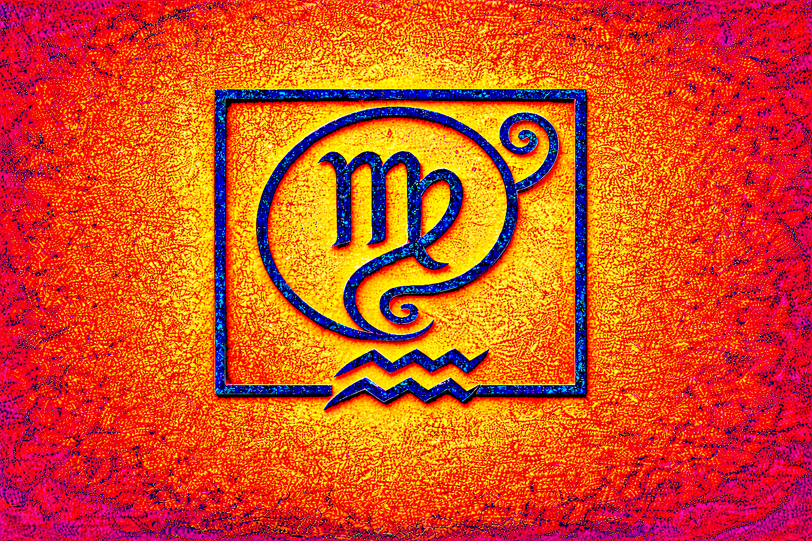

Choosing AKASHA Consultancy means taking a step closer to your vision.
Together, we create pathways to growth, harmony, and lasting impact.
The Akasha Records are often described as a universal library, a living archive of all thoughts, words, and actions ever conceived. Continuously updated, they offer timeless wisdom and guidance for both personal and collective growth. At AKASHA Consultancy, we draw inspiration from this source to help individuals and organizations align with their highest potential.
We are committed to nurturing human values, fostering harmony within society, and cultivating balance with nature. Our aim is to inspire people to unlock their unique talents and create lasting quality in both their inner and outer worlds. Through this work, we strive to generate opportunities, empower communities, and support meaningful change on a global scale.
At AKASHA Consultancy, our mission is to enhance the quality of life and services by providing clear, transparent, and meaningful insights.
Analysis of public and private information to offer valuable perspectives on current and future projects.
Building purposeful connections between organizations, businesses, and individuals.
Tailoring solutions to unique needs with the highest respect for privacy and discretion.